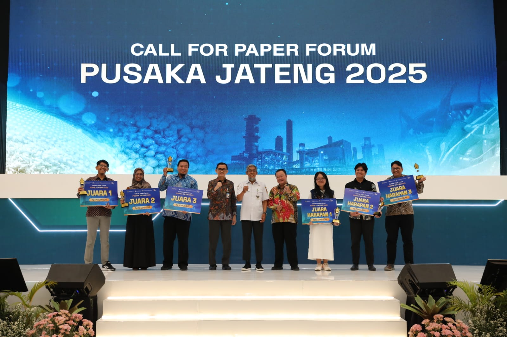
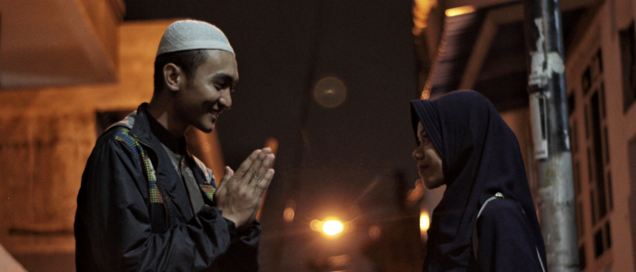

Hi, I’m Tama, an award‑winning Data Analyst and Storyteller. I believe data helps us connect with reality in a reflective way and teaches us to embrace what it reveals. For me, understanding data is a way of receiving truth as destiny. Beyond statistics, my skills in writing, graphic design, and audiovisual editing allow me to transform data into stories that are engaging, thought‑provoking, and sometimes delightfully out of the box.
Explore My WorkDietary diversity is a reliable indicator of food security. This study examines diversity in consumption through the Simpson Index using the food expenditure approach at the regency and city levels in Indonesia, with a particular focus on Kalimantan, the location of the new capital city, Nusantara. Further analysis explores the relationship between dietary diversity and food inflation, a key aspect of food security. The data used to develop the index is drawn from the National Socio-Economic Survey (SUSENAS) conducted by Statistics Indonesia from 2020 to 2023. Food inflation modeling was performed using the Threshold Panel Regression method on data from 90 cities. The findings suggest that concerted efforts are required to enhance food diversity in the supporting regions around IKN, particularly in South Kalimantan, which exhibits a relatively lower Simpson Index compared to other areas in Kalimantan. Moreover, the Simpson Index achievement has a significant impact on reducing food inflation rates. ... (more)
East Java Province holds a strategic role in the national economy, serving as the second-largest contributor to GDP after Jakarta and as a key trade hub to Eastern Indonesia. Yet regional disparities remain substantial, particularly reflected in the economic underdevelopment and weak logistics connectivity of Madura Island, which lies adjacent to the Gerbangkertosusila growth corridor. Addressing this gap requires a deeper understanding of sectoral and spatial linkages that shape Madura’s growth trajectory. This study applies the Miyazawa Input-Output Model for East Java Province, integrating 17 economic sectors and 38 regencies/municipalities to enable simultaneous sectoral and regional analysis. The simulations assess the effects of increasing household income in Madura, spillover from surrounding regions, and the combined role of strengthening the Transportation and Warehousing sector alongside Agriculture and Manufacturing. The findings show that the logistics sector in Madura, when considered independently, has limited impact; however, its significance rises when complemented by productive local sectors. Moreover, spillover from surrounding regions into Madura proves weaker than spillover directed outside Madura, underscoring the island’s fragile spatial connectivity. These results highlight the urgency of affirmative policies that strengthen productive sectors, enhance interregional linkages, and ensure Madura’s integration into East Java’s broader economic development. ... (more)
Infrastructure plays a vital role in rural development. There is frequently a disparity in infrastructure development between rural and urban areas in developing countries, including Indonesia. Thus, a comprehensive analysis of infrastructure development is required. This study seeks to evaluate the impact of infrastructure development in Kalimantan, Indonesia, using the Physical Infrastructure Index framework. Using principal component analysis, this study develops the Physical Infrastructure Index. Derived from the Village Potential Survey data, the data consists of 30 indicators organized into 7 dimensions. The findings from this research show a disparity in Physical Infrastructure Index between municipalities and districts. This reflects the fact that infrastructure development in Indonesia focuses more on municipalities than districts, which are geographically difficult to access. This disparity contributes to Indonesia's poverty dilemma. It has also been demonstrated that the development of infrastructure has an effect on poverty reduction, whether in regions or municipalities. ... (more)
Economic growth is widely associated with degradation of environmental quality. Green economy is a term that later emerged to save the environment. In Islamic point of view, the environment and the economy are two things that must support each other. This study discusses Islamic economics that should be associated with sustainability, as in line with the teachings of Islam to coexist with the environment. The method used are correlation analysis and panel data regression to find out the association between Islamic economics and green growth in major Islamic economic countries. The results show that the Global Islamic Economy Indicator (GIEI) is positively correlated to the Green Growth Index (GGI). Based on the panel data regression model, Muslim Modest Fashion sector significantly has a positive effect on GGI. Unfortunately, in general, the GGI achievements of the OIC countries are still very lacking compared to non-OIC countries. It is the government's duty to start implementing environmentally oriented policies in all sectors of the Islamic economy inclusively ... (more)
Islam holds an important position in various human development processes in Indonesia, one of them is in the education sector. The Indonesian government through the Ministry of Religious Affairs established madrasas and Islamic Higher Education as an Islamic-based formal educational institution. Through logic and science, education is the way for humans to develop equally regardless of their gender. Herein lies the role of Islamic-based education to uphold this anti-discrimination principle. This research has the aim of conducting a composite index, namely the Islamic Education Development Index (IEDI) to describe the condition of Islamic education development at the provincial level in Indonesia. In addition, statistical modeling is carried out to see the influence of Islamic education on the Gender Development Index (GDI). The IEDI is a composite index consisting of five indicators including infrastructure accessibility, teaching competence, institutional ranking, outcomes, and quality of the learning process. Based on the research results, the average IEDI score of provinces in Indonesia is 45.13 for the period 2019. The best IEDI score by province is Yogyakarta, reaching a score of 55.00, and the lowest is North Kalimantan, which is only 35.90. Based on modeling results, it was also found that the IEDI has a significant effect on increasing the GDI at the confidence interval (CI) up to 95 percent. Governments can begin to pay more attention to Islamic-based education to optimize this influence. ... (more)
The creative economy is a new paradigm to be reckoned with. Unfortunately, film as the priority sub-sector of Indonesia's Creative Economy failed to become one of the five sub-sectors with the largest multiplier effect to other sub-sectors of the creative economy. There is an immeasurable impact of film on the tourism sector which is known as film tourism. This research conducts empirical evidence on the case study of Belitung Island and the Laskar Pelangi film to measure the magnitude of the film tourism effect. The analytical method used in this study is the ARIMA (Autoregressive Integrated Moving Average) intervention modelling. The results of the intervention model show that the Laskar Pelangi film and the Kata Museum of Andrea Hirata have a significant direct effect on the tourist arrival in Belitung Island. Meanwhile, the influence of the Tanjung Kelayang Tourism SEZ was significant almost one year after it was established. The increase in tourist arrival due to Laskar Pelangi film tourism is two times higher than without the effect, indicating that the film tourism phenomenon is possible to become a new form of innovation that is effective as a catalyst for the future of Indonesia's tourism sector. ... (more)
The COVID-19 pandemic is a serious problem for the economies of many countries, including Indonesia. Low specimen testing capacity, causing uncontrolled transmission. The Indonesian economy is faced with a recession. The economic vulnerability to the COVID-19 pandemic needs attention as a basis for making the right policies. This study aims to build an economic vulnerability index to COVID-19 and map the vulnerability of the regional economy to form priority groups for economic policies. This index consists of two dimensions: exposure and shock. It was found that the score for Indonesia’s economic vulnerability index to COVID-19 reached 56,58. Provinces in Java Island tend to have high economic vulnerability, especially DKI Jakarta. Furthermore, the economic vulnerability index has a significant negative relationship with the GRDP growth in the 2nd quarter of 2020. Through quadrant analysis, four priority groups were obtained. Priority I consist of DKI Jakarta, Banten, West Java, Bali and DI Yogyakarta which need more attention because of high possibility of shocks and structurally more exposed to the economic impacts caused by the COVID-19 pandemic shocks. ... (more)
The COVID-19 pandemic is a serious problem for the economies of many countries, including Indonesia. Low specimen testing capacity, causing uncontrolled transmission. The Indonesian economy is faced with a recession. The economic vulnerability to the COVID-19 pandemic needs attention as a basis for making the right policies. This study aims to build an economic vulnerability index to COVID-19 and map the vulnerability of the regional economy to form priority groups for economic policies. This index consists of two dimensions: exposure and shock. It was found that the score for Indonesia’s economic vulnerability index to COVID-19 reached 56,58. Provinces in Java Island tend to have high economic vulnerability, especially DKI Jakarta. Furthermore, the economic vulnerability index has a significant negative relationship with the GRDP growth in the 2nd quarter of 2020. Through quadrant analysis, four priority groups were obtained. Priority I consist of DKI Jakarta, Banten, West Java, Bali and DI Yogyakarta which need more attention because of high possibility of shocks and structurally more exposed to the economic impacts caused by the COVID-19 pandemic shocks. ... (more)

My Paper entitled "Developing the Potential of Sustainable Tourism Based on Railways: A Case Study of Local Train Routes in Central Java" won the First Winner Prize at Pusaka Jateng, Forum for Formulating Policy Analysis and Recommendations of Central Java.
Our Team's Presentation entitled "Living Longer is not Enough" won the First Winner Prize and a Travel Grants to present at Australian Bureau of Statistics, Department of Social, Department of Health and Ageing, and Australian National University.
Our Data Visualization entitled "Beastly Challenges in Responsible AI and Where to Find Them" trying to highlights the complexity and diversity of issues countries face as they navigate the ever-changing landscape of AI ethics and governance

Email: fatanzawiratama@gmail.com
GitHub | LinkedIn | Instagram